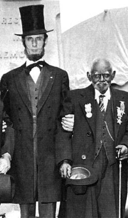

|
Federal demobilization began almost immediately after the Confederate
surrender and moved quickly to discharge the volunteer soldier force.
Demobilization generally took place by seniority of service, although, because
muster-out orders covered army corps rather than individual regiments, some new
units were disbanded before veteran ones. Within five months of the surrender,
the War Department had discharged nearly one-third of the black volunteers, and
within eighteen months, more than nine-tenths. The black volunteer force that
had stood at roughly 123,000 in July 1865 shrank to approximately 83,000 three
months later. By the fall of 1866, fewer than 13,000 black soldiers remained in
service, and all were discharged by the fall of 1867.'
Nonetheless, many black soldiers believed that the demobilization process
took too long. With the fighting ended, they longed to leave the service and
return to civilian life. Because they had enlisted on the assumption that they
would serve for three years or the duration of hostilities, many could neither
understand nor accept the seemingly endless delays that encumbered discharge.
One soldier, repeatedly frustrated in his attempt to be discharged, at last
exploded, "We have fought like men and now ar treatid like dogs." The travail of
slavery added to the anxiety black soldiers suffered while awaiting discharge,
inasmuch as former slaves worried about the safety, even the exact whereabouts,
of their loved ones in ways that did not concern free men. Black troops
stationed near their families saw at close range the physical deprivation and
suffering that their families endured at the hands of former masters or new
employers. Even when federal authorities afforded black dependents the
protection of contraband camps, the dilapidated facilities and critical
shortages of food and clothing that characterized those refuges convinced black
soldiers that the welfare of their wives and children demanded their immediate
return to civilian life.
Lingering pockets of slavery in portions of the South added to the burden of
some black soldiers. Unlike its border-state neighbors, for example, Kentucky
did not abolish slavery during the war, and its loyalty to the Union exempted it
from the Emancipation Proclamation. Moreover, many Kentucky masters defied the

"The First Vote", published in 1867, takes a positive stance
on black voting; showing representatives from the key sources of African
American leadership. Soldiers were expected to play a key role in the
postwar South; white Southerners did all they could to keep
that from happening.
|
March 1865 congressional resolution that freed the immediate families of blacks
in the armed forces. Even when wives and children obtained their liberty,
soldiers still worried about other kinfolk who, excluded from the resolution's
promise of freedom, remained legally the property of their "loyal" masters. To
make matters worse, the final battles of the war took many Kentucky regiments
far from home. Several units served in the Virginia campaign with the black 25th
Army Corps, which was then transferred to Texas when fighting ended in the East.
In December 1865, ratification of the Thirteenth Amendment at last extinguished
slavery's legal standing, but physical separation continued to deny soldiers
knowledge of their families' welfare and left their worry undiminished.
Once discharged, black soldiers attempted to collect the bounties promised
them at enlistment, payments they had hoped would guarantee family security in
their absence and perhaps provide a head start at war's end. A bounty of several
hundred dollars, even if collected in installments, would go far toward the
purchase of the land, mules, and equipment necessary for a new life in freedom.
For once black soldiers did not lack assistance. Claim agents, many of them
former recruiting officers, established offices at every major army post to aid
black veterans. Many agents honestly attempted to help their clients through the
tangled web of bounty eligibility, but others, taking advantage of the confused
state of the law and the ignorance of the soldiers, cheated without compunction.
In desperation, former soldiers sought assistance at military posts and
Freedmen's Bureau offices. Responding to the swelling ranks of black claim
seekers, the bureau created a special claim branch in 1866, which survived until
1872--four years after most other bureau operations terminated--and formed the
nucleus of its successor, the Freedmen's Branch of the Adjutant General's
Office. Yet, despite these efforts, most black veterans and their families met
countless obstacles in their effort to collect the money they believed due them.
By virtue of the slow payment process in legitimate cases and the prolonged
investigation necessary in disputed cases, many bounties remained uncollected
for years.
Like other Union soldiers, blacks left the army amid great fanfare. Officers
recounted their exploits, praised their accomplishments, and congratulated them
on behalf of a grateful nation for a job well done. The applause grew louder
when the black veterans returned home to family and friends. Often entire black
communities turned out to greet the black liberators, their own conquering
heroes. Savoring such approval, some former slaves continued to wear their blue
uniforms, and even those who had enjoyed no special status before the war were
called upon for their advice on personal and community matters. Some veterans,
especially the handful who had served as commissioned officers and the more
numerous sergeants and corporals, actively sought positions of leadership and
directly transferred their experience in the wartime struggle for liberation to
the postwar struggle for equality.
If the self-confidence of returning black veterans comforted the black
community, it worried the white one. As part of John Brown's army and the Union
occupation force, black soldiers symbolized Southern defeat. But whereas armed
and organized soldiers enjoyed the protection of the federal military
establishment, as well as the force of their own numbers, individual returning
veterans were vulnerable to assault by angry, frustrated Confederate partisans.
Former Confederate soldiers felt the presence of black veterans most keenly.
Cut adrift from the old antebellum world, unable to find a place in the new
postbellum one, traumatized by fear of losing status, and angered by "foreign"

Black veterans were often targeted by the Ku Klux Klan.
|
military occupation, they frequently formed the nucleus of regulator gangs that
roamed the South in the wake of Lee's surrender, avenging Confederate defeat and
reasserting the old order. They vented their wrath on the most obvious and, in
some ways, the most available symbol of the new order--discharged black
soldiers--and threatened, assaulted, and murdered returning veterans almost at
will. When alert black veterans managed to escape the regulators, their families
frequently suffered in their stead. While many respectable whites deplored the
uglier aspects of regulator violence, few took steps to curtail it. Indeed, many
white officials seemed to take special pleasure in turning the tables on abused
soldiers, accusing and even convicting them of some petty offense that allegedly
had provoked the initial assault.
Assaults on Union blue and the equation of Union military service with
subversion indicate the deeply symbolic nature of the violence black veterans
everywhere confronted. Behind the symbols stood the stark reality that former
soldiers with their sense of pride, their expectations of full citizenship, and
their military experience offered real protection to the black community and
impeded white attempts to restore the old order. Nothing made that reality
clearer than the return of black veterans who had purchased their arms at the
time of discharge. Tossing aside Constitutional guarantees, whites moved quickly
to disarm returning black soldiers. In some places, like Mississippi, planters
and local officials acted in concert as part of a calculated state policy.
Elsewhere, employers, local officials, and vigilantes acted on their own
authority to disarm blacks. Everywhere, however, the attempt to disarm returning
black soldiers added to the level of postwar violence as black veterans resisted
being stripped of the means of self-protection and one of the most important
symbols of their new status.
Southern whites uniformly despised the presence of former black soldiers, but
demographic and political conditions shaped their opposition in different ways.
In lowcountry South Carolina and Georgia, for example, the overwhelming
numerical preponderance of blacks protected black veterans from the full fury of
white hostility. Numerical dominance offered similar protection in the lower
Mississippi Valley, although gangs of former Confederate soldiers and other
regulators assiduously pursued returning black soldiers. In the upcountry from
Virginia to Mississippi, however, where whites dominated numerically and
enlistment had often been a solitary act prefaced by flight from slavery,
isolated black veterans fell easy prey to regulator bands and vengeful former
masters.
Black soldiers returning to the border states suffered by far the most
widespread and systematic postwar terror. Maryland, Tennessee, and Missouri had
each charted a wavering course toward emancipation, with black enlistment
playing a major role in slavery's demise. The war and the transition from
slavery to freedom left their white populations deeply embittered and sharply
divided; Confederate sympathizers commonly turned upon blacks as scapegoats.
Kentucky, unlike the other border states, had never accepted emancipation on its
own and considered federally mandated liberation a betrayal of its wartime Union
loyalty. There, unionists enraged at having lost their slaves despite their
fidelity joined forces with rebels equally enraged at having lost their slaves
as the price of defeat, and both vented their frustration on returning black
soldiers. In some communities, whites assaulted black veterans as they alighted
from trains. In other places, whites denied returning soldiers access to their
families, to employment, and to the equal protection of the law. Moreover, the
pattern of demobilization meant that discharged soldiers could not take
advantage of either their collective armed might or their numerical
preponderance in the black male population. Because individual regiments were
mustered out sporadically over the first two postwar years, black soldiers often
returned home in the most vulnerable circumstances, either individually or in
small groups.
Federal officials could do little to halt the vicious physical abuse. In
February 1866, after months of investigation, General Clinton B. Fisk, head of
the Freedmen's Bureau in Kentucky and Tennessee, reported on the treatment of
Kentucky blacks. Many of the estimated 25,000 returned black soldiers, he
concluded, "were enlisted against the wishes of their masters, and now, after
having faithfully served their country, and been honorably mustered out of its
service, and return to their old homes, they are not met with joyous welcome,
and grateful words for their devotion to the Union, but in many instances are
scourged, beaten, shot at, and driven from their homes and families..." When
Fisk submitted his findings to the Kentucky state legislature, that body accused
him of fabricating bloody incidents to besmirch the state's reputation. The
violence that continued for years afterward revealed the brutal consequences of
the black man's role in the war for freedom and Union.
Assaults against black veterans did not diminish the importance of the black
military experience; instead, they confirmed its importance. Having traveled
broadly and enjoyed a wide range of experience generally denied the slave,
former soldiers brought a new worldliness and sophistication to the black
community. They had seen white men powerless as well as powerful, and they had
seen black men powerful as well as powerless. They had confronted the impersonal
|

Black veterans remained active in veterans'
organizations and reunions after the war. This picture, taken
at the 75th anniversary commemoration of the Battle of Gettysburg,
shows 96-year-old Joseph Aquilla Wilson with a Lincoln impersonator.
Wilson, who lived to be 101, served with the 32nd United States
Colored Troops.
|
rules that regulated military life as well as the slave owner's paternalistic
justice and mastered both. They had acquired literacy and the intangible
qualities of battle-forged leaders. Black veterans quickly put their experience
to work. Throughout the South they founded schools, led churches, and took their
places as community leaders.
The political importance of the black military experience became apparent at
the end of the war. Black veterans--many of them still wearing their Union
uniforms--played a prominent role in the host of state and local conventions
freedmen held during 1865 and 1866. Not surprisingly, the published addresses
and resolutions of these meetings almost without fail predicated their case for
extending full citizenship rights to Southern blacks upon the military record of
black soldiers. When Radical Reconstruction began, former soldiers continued to
play an important role, joining forces with white Republicans to advance the
transformation of the South initiated by Confederate defeat. Some former
soldiers, including Stephen A. Swails in South Carolina, Henry M. Turner in
Georgia, William U. Saunders in Florida, and P. B. S. Pinchback (along with
several of his fellow officers in the Native Guard regiments) in Louisiana,
served in prominent elective office during Reconstruction. Countless other
former soldiers served in local elective offices, in appointive offices, and as
officers in state and local Republican organizations. Black veterans in the
North organized along similar political lines. In Iowa they held a soldiers'
convention to map political strategies for the postwar era, and in the Northeast
they formed the Colored Soldiers' and Sailors' League for the same purpose. Like
their Southern counterparts, they also became staunch Republicans. Through such
political forums former soldiers extended their influence to statewide and, at
times, national constituencies.
Brandishing a finely honed sense of their own role as liberators former
soldiers moved to the front ranks, in the struggle for land, economic autonomy,
and racial justice. The knowledge that they had subdued the rebellion and
secured Union victory added force to their demands for equal treatment and the
full rights of American citizens. When confronted by hostile whites, they
commonly announced--in defiance of the obvious risks that such assertiveness
entailed--that they had fought under the stars and stripes, had worn Union blue,
and feared no man, whatever his color. As former masters had anticipated, the
pride and sense of accomplishment that black soldiers brought home from the war
proved contagious. Under the soldiers' example and tutelage, both Northern free
blacks and Southern freed blacks insisted that black people had fought for their
liberty and, consequently, should share in the fruits of victory. That
insistence animated postwar demands for land, full citizenship rights and social
justice.
Source: Freedmen and Southern Society Project, Freedom, A
Documentary History of Emancipation, 1861-1867 (New York: Cambridge
University Press, 1985), 765-770.
|